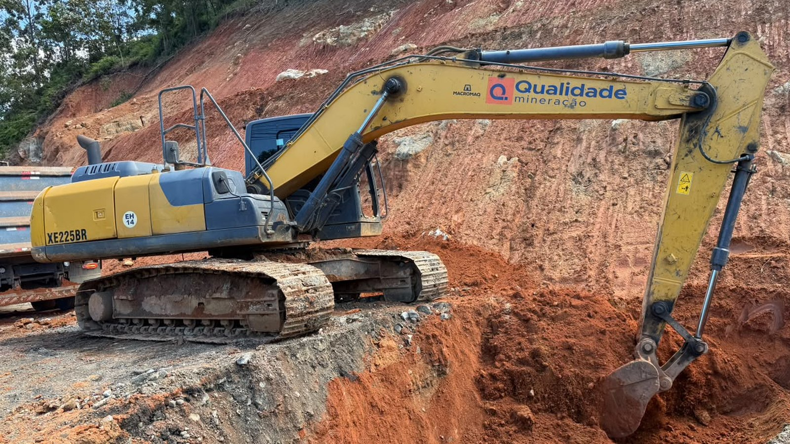

Itapema · Obras
Itapema · ObrasMorro do Encano fecha de novo para detonação de rochas nesta segunda a partir das 8h, o segundo bloqueio de dia inteiro em 17 dias
A matéria em que o valor e o prazo da obra ficaram como pergunta sem resposta.
A Prefeitura de Itapema informou nesta quarta-feira, 7 de outubro, que as equipes começaram a regularização do subleito e os serviços de drenagem no Morro do Encano, e que a obra segue dentro do planejamento. O aviso não diz quanto a obra custa nem até quando o contrato vale. Fomos ler a ficha no portal nacional de contratações: é o contrato 061/2026, assinado em 9 de abril com a Qualidade Mineração Ltda, de R$ 9.819.294,06, para pavimentar 1.748,40 metros da Rodovia SC-102. A vigência termina em 8 de fevereiro de 2027. Dos 305 dias do contrato, 181 já passaram, e ainda faltam base, pavimentação asfáltica e sinalização.
Em 30 segundos · Modo de Leitura, formato original Santa Informa
O Morro do Encano é a estrada velha que liga Itapema a Camboriú.
Ela está em obra de alargamento e pavimentação.
Nesta quarta a Prefeitura disse que começou a drenagem e o subleito.
Subleito é a camada de terra que sustenta o asfalto.
O aviso diz que a obra está dentro do planejamento.
Só que ele não diz qual é o planejamento.
Nem o valor, nem a empresa, nem a data de entrega.
Fomos buscar o contrato no portal nacional de contratações.
É o contrato 061/2026, assinado em 9 de abril.
A empresa é a Qualidade Mineração Ltda.
O valor é R$ 9.819.294,06.
O trecho pago tem 1.748,40 metros.
Dá R$ 5.616 por metro de estrada.
A licitação estimava R$ 13.451.087,75.
Fechou 27% abaixo do estimado.
A vigência vai de 9 de abril a 8 de fevereiro de 2027.
São 305 dias no total.
181 já passaram, e faltam 124.
Isso é 59% do prazo gasto.
E ainda vem base, asfalto e sinalização.
8 de fevereiro cai no fim da temporada, não no começo.
Vigência de contrato não é data de entrega da obra.
O cronograma por etapa é anexo do edital e não está publicado.
A Prefeitura também não publica medição nem percentual executado.
Nós já contamos duas interdições do morro, em setembro.
Nas duas, valor e prazo ficaram como pergunta em aberto.
Agora o valor e o prazo estão aqui.
InfraestruturaPublicada em Redação Santa Informa

A obra do Morro do Encano, a estrada que liga Itapema a Camboriú, entrou na fase de regularização do subleito e de drenagem, e o contrato que paga o serviço custa R$ 9.819.294,06 e tem vigência até 8 de fevereiro de 2027. Nesta quarta-feira, 7 de outubro, a Prefeitura informou o avanço e disse que os trabalhos seguem dentro do planejamento. O aviso não traz valor, empresa nem prazo. Fomos ler a ficha do contrato no Portal Nacional de Contratações Públicas: dos 305 dias de vigência, 181 já correram, o que dá 59%, e as etapas de base, pavimentação asfáltica e sinalização ainda estão pela frente.
Segundo o comunicado, depois do alargamento da via e da detonação de rochas as equipes começaram a nivelar e compactar o solo que vai sustentar a estrutura da nova estrada. O secretário de Governo e Infraestrutura, Marcelo Correia, disse que a obra avança conforme o cronograma e que houve períodos de muita chuva nos últimos meses. O prefeito Alexandre Xepa tratou a ligação como alternativa à BR-101 nos períodos de maior movimento. A Prefeitura fala em cerca de dois quilômetros em execução e cita ciclovia, áreas de escape, mirantes turísticos e passagens de fauna no projeto.
O contrato é o 061/2026, do processo 217/2025, assinado em 9 de abril de 2026 com a Qualidade Mineração Ltda, de Camboriú. O objeto mede o trecho que ele paga: 1.748,40 metros, do km 5+834,39 ao km 7+582,79, o que dá R$ 5.616 por metro. A licitação foi uma concorrência eletrônica com valor estimado de R$ 13.451.087,75. Fechou em R$ 9.819.294,06, 27% abaixo da estimativa, uma diferença de R$ 3,63 milhões. As propostas se encerraram em 2 de dezembro de 2025, e o contrato foi assinado 128 dias depois. O documento chama a via de Rodovia SC-102, e quem contrata e paga é o município.
A vigência vai de 9 de abril de 2026 a 8 de fevereiro de 2027. Faltam 124 dias para esse fim de prazo, e a obra está agora na preparação do terreno, antes da base e do asfalto. 8 de fevereiro cai no fim da temporada, não no começo dela, o que importa porque a própria Prefeitura apresenta a estrada como rota alternativa à BR-101 no verão. Até esta quarta-feira não havia termo aditivo publicado para o contrato.
Em 4 de setembro e em 21 de setembro o morro ficou fechado o dia inteiro para detonação de rochas, e nós cobrimos as duas interdições. Nas duas matérias, o valor e o prazo da obra ficaram registrados como pergunta sem resposta. O acordo que destravou o projeto é de 9 de janeiro de 2025, quando Itapema e Camboriú assinaram termo de cooperação com a bancada do Vale do Itajaí na Assembleia Legislativa.
O resumo de 30 segundos está no topo e a versão completa é o texto acima. Aqui ficam as três leituras da casa sobre o mesmo assunto.
Clara, a otimista
A estrada do Encano saiu do papel, e isso não é pouco. É uma ligação que a cidade pede há décadas, e agora tem máquina no barranco, rocha já detonada e terreno sendo preparado para o asfalto. Quem já desceu por ali sabe o tamanho da diferença entre o que era e o que está ficando.
E o contrato traz uma boa notícia escondida. A licitação estimava R$ 13,45 milhões e fechou em R$ 9,82 milhões. São R$ 3,63 milhões que ficaram no caixa, o equivalente a quase um terço da obra, e sobraram para outra coisa da cidade. Disputa que funciona é dinheiro público rendendo mais. Some a isso ciclovia, mirante e passagem de fauna no projeto, e não é só uma estrada: é uma estrada pensada para durar e para ser bonita de percorrer.
Seu Prudêncio, o criterioso
Merece atenção a relação entre o calendário e a etapa. A vigência do contrato vai até 8 de fevereiro de 2027, 59% dela já correu, e a obra está na preparação do terreno, com base, asfalto e sinalização ainda por fazer. Não afirmo atraso, porque o cronograma por etapa não é público, e sem ele qualquer conclusão seria chute. Digo que o conjunto merece acompanhamento mês a mês.
Vale acompanhar também a data escolhida. Oito de fevereiro é o fim da temporada, não o começo. Se a via é apresentada como alternativa à BR-101 no verão, o alívio que ela promete chega depois do pior do movimento. Isso não é defeito do contrato, que foi assinado em abril e tem o prazo que tem, mas é informação que o morador precisa ter antes de contar com o atalho em janeiro.
Uma sugestão útil, e barata: publicar o percentual de execução junto com cada aviso de avanço. A Prefeitura já faz a medição para pagar a empresa, então o número existe e só precisa sair do processo. Dito isso, o encaminhamento tem mérito claro. A obra está rodando, a economia de R$ 3,63 milhões na licitação é real, e preparar subleito e drenagem antes de asfaltar é a ordem técnica correta. Quem pula essa etapa paga depois, em remendo.
Caco, o sarcástico
A Prefeitura avisou que a obra está dentro do cronograma. Que bom. Agora só falta avisar qual é o cronograma.
Reclamação registrada: a gente perguntou o valor em setembro, perguntou de novo, e a resposta veio de um portal em Brasília. R$ 9,8 milhões, R$ 5.616 o metro. Por esse preço, cada metro de Encano custa mais que muito carro que vai passar em cima dele.
Mas tá bom. É progresso. A estrada fica pronta na vigência que termina em 8 de fevereiro, bem a tempo de pegar o último fim de semana da temporada sem fila na BR-101. Quem ficar preso no trânsito em janeiro que use o tempo para imaginar o mirante.
Fontes: o início da regularização do subleito e dos serviços de drenagem, a fala do secretário Marcelo Correia, a fala do prefeito Alexandre Xepa, a extensão de cerca de dois quilômetros, a menção a ciclovia, áreas de escape, mirantes turísticos e passagens de fauna e as etapas seguintes estão no aviso Obras no Morro do Encano avançam com drenagem e preparação do solo, publicado pela Prefeitura de Itapema em 7 de outubro de 2026 e lido por nós no mesmo dia. O número do contrato, o valor de R$ 9.819.294,06, a data de assinatura de 9 de abril de 2026, a vigência até 8 de fevereiro de 2027, o nome da Qualidade Mineração Ltda, o processo 217/2025 e a extensão de 1.748,40 metros do km 5+834,39 ao km 7+582,79 estão na consulta dos contratos de 2026 do Município de Itapema, no Portal Nacional de Contratações Públicas, lida por nós em 7 de outubro de 2026. O valor estimado de R$ 13.451.087,75, o valor homologado, a modalidade de concorrência eletrônica e o encerramento das propostas em 2 de dezembro de 2025 estão na ficha da compra 136/2025 de Itapema, no mesmo portal. Que não há termo aditivo publicado para esse contrato foi conferido por nós na mesma base, lendo os 678 registros contratuais de Itapema em 2026. Os 305 dias de vigência, os 181 já corridos, os 124 restantes, os 59%, os 128 dias entre proposta e assinatura, o valor por metro e a diferença de R$ 3,63 milhões são contas nossas sobre esses dados, feitas em 7 de outubro de 2026. As duas interdições de setembro e o termo de cooperação de 9 de janeiro de 2025 estão nas nossas matérias Detonação de rochas fecha o Morro do Encano nesta sexta e Morro do Encano fecha de novo para detonação de rochas nesta segunda. O outro caso em que a cidade paga estrutura de órgão do estado está na nossa matéria Itapema já assinou R$ 449,7 mil em 2026 para equipar e abrigar o Corpo de Bombeiros.
Itapema · ObrasA matéria em que o valor e o prazo da obra ficaram como pergunta sem resposta.
 Itapema · Poder Público
Itapema · Poder PúblicoA regra que a Câmara discute sobre obra na rua durante a temporada.
 Itapema · Segurança
Itapema · SegurançaO outro caminho pelo qual a cidade paga estrutura de órgão estadual.